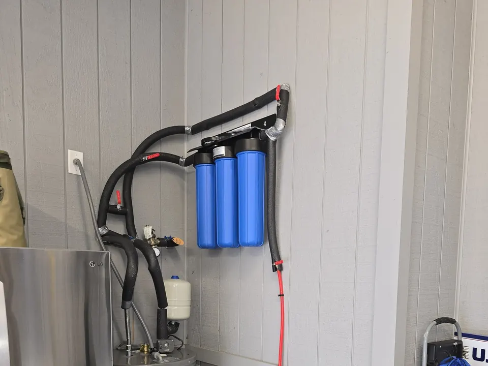

If you are dealing with bad-tasting water, unpleasant odors, sediment, chlorine, or general water quality concerns, Angle Stop Plumbing can help you choose the right whole home water filtration system for your needs.
Schedule Whole House Water Filter Service Today!
Professional Whole House Water Filtration System Installation
A whole house water filtration system treats water as it enters your home, helping provide filtered water to sinks, showers, tubs, toilets, and appliances. Unlike point-of-use filters that only treat water at one faucet, a whole-home system improves water quality across your entire plumbing system.

At Angle Stop Plumbing, we provide dependable whole house water filtration system installation, replacement, and service for homeowners who want cleaner, better-quality water throughout the home.
Our services may include:
- Whole house water filtration system installation
- Whole home water filter replacement
- Water filtration system repair
- Sediment filter installation
- Carbon water filtration systems
- Pre-filter and post-filter upgrades
- Water quality improvement solutions
- Residential water filtration system service
- Filter housing and connection upgrades
- Routine maintenance for whole-home water filters
We focus on practical solutions that support better water quality, system reliability, and long-term value.
What Is a Whole House Water Filtration System?
A whole house water filtration system is installed on the main water line entering your home. This allows the system to filter water before it reaches your fixtures and plumbing appliances. Depending on the type of system installed, it may help reduce:
- Sediment
- Chlorine
- Rust particles
- Dirt and debris
- Unpleasant tastes and odors
- Certain other common water impurities
This type of filtration is a strong option for homeowners who want broader water treatment coverage rather than filtering water at just one location.
Benefits of a Whole Home Water Filtration System
Installing a whole home water filtration system can provide several benefits for your home and daily routine.
Cleaner Water Throughout the Home
A whole-house system filters water before it reaches your faucets, showers, and appliances, helping improve overall water quality across the property.
Better Taste and Odor
If your tap water has a chlorine smell, strange taste, or unpleasant odor, filtration can help make household water more enjoyable to use.
Reduced Sediment and Buildup
Filtration systems can help reduce sediment and particles that may affect plumbing fixtures, clog aerators, or contribute to appliance wear over time.
Improved Water for Bathing and Cleaning
Filtered water can improve the experience of showering, washing dishes, doing laundry, and handling other daily household tasks.
Added Protection for Plumbing and Appliances
Cleaner water may help reduce stress on water-using appliances and plumbing fixtures by limiting certain particles and impurities moving through the system.
Signs You May Need a Whole House Water Filtration System
You may benefit from a whole house water filtration system if you notice any of the following:
- Water that smells like chlorine or chemicals
- Poor-tasting drinking water
- Sediment or particles in tap water
- Staining on sinks, tubs, or fixtures
- Cloudy or discolored water
- Buildup on faucets or showerheads
- Concerns about the quality of your household water
- A desire for filtered water at every fixture in the home
Even if the water looks clear, filtration may still improve taste, smell, and the overall quality of water your household uses every day.
Our Whole House Water Filtration Process
At Angle Stop Plumbing, we make the installation process simple and straightforward.
- Discuss your water quality concerns and household goals.
- Evaluate your plumbing setup and determine the best location for installation.
- Recommend the right whole house water filtration system for your needs.
- Install the system professionally with attention to performance and reliability.
- Test the system and explain maintenance needs so you know how to keep it working effectively.
Our goal is to deliver a filtration solution that fits your home, improves water quality, and performs reliably over time.
Why Choose Angle Stop Plumbing?
When you need a trusted plumber for whole house water filtration system installation, it helps to work with a company that values quality, honesty, and dependable service. Homeowners choose Angle Stop Plumbing because we provide:
- Professional installation and service
- Honest recommendations based on your needs
- Quality workmanship and dependable plumbing solutions
- Clear communication throughout the project
- Residential water filtration expertise
- Respectful, reliable service in your home
We understand that better water quality can make a meaningful difference in your everyday comfort, and we work hard to provide solutions you can count on.
Schedule Whole House Water Filtration System Service With Angle Stop Plumbing
If you are ready to improve the quality of your home’s water, contact Angle Stop Plumbing for professional whole house water filtration system installation and service. We provide reliable water filtration solutions designed to help homeowners enjoy cleaner, better water throughout the entire home.
Trust Angle Stop Plumbing for quality workmanship, honest recommendations, and dependable whole home water filtration system service.